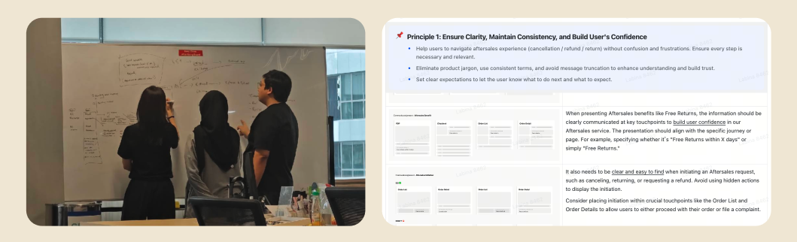
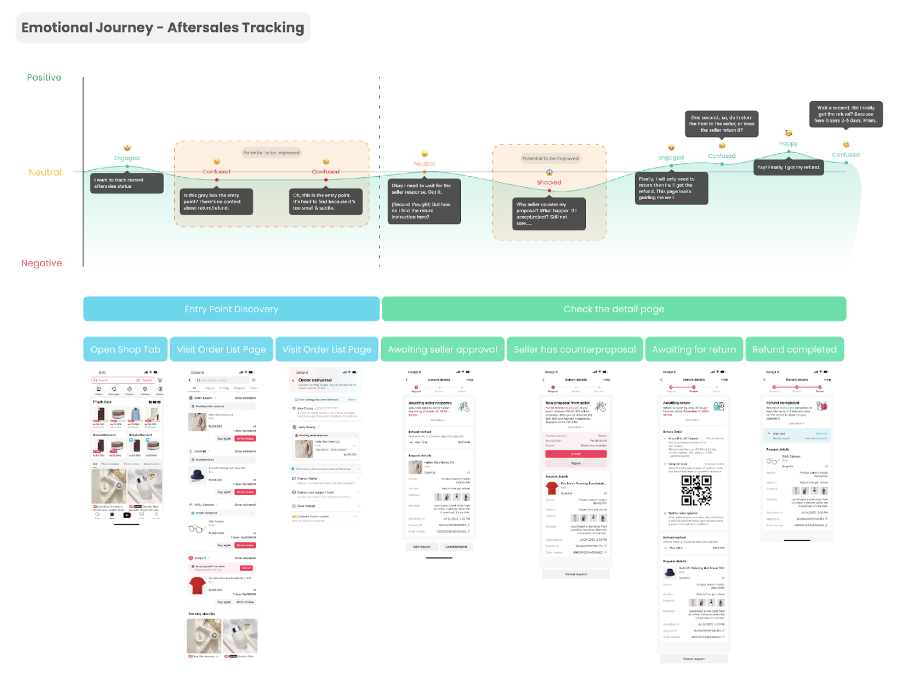
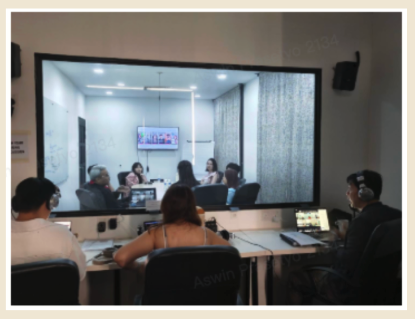
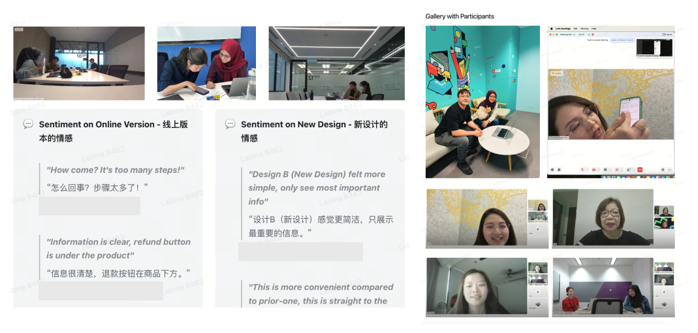
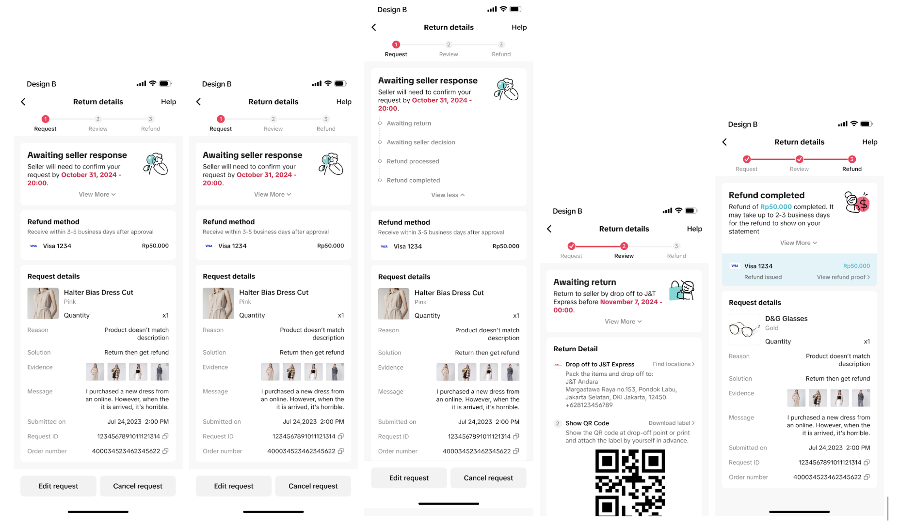
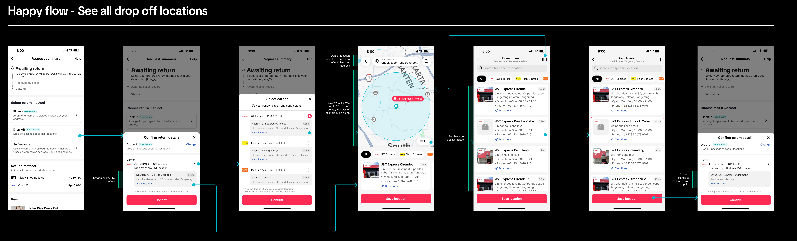

Reflecting on the declining NPS and CSAT scores of TikTok Shop post-purchase and refund experience, we identified that both journeys were confusing, fragmented, and difficult to navigate. Through internal design audits, we uncovered inconsistencies across existing UX flows that contributed to trust gaps throughout the customer journey.
To address these challenges, we reimagined and rebuilt the end-to-end experience foundation to restore user trust and improve service quality. Over a 5-month initiative, the project involved cross-functional collaboration with Product and Business teams, user research and prototype testing across multiple SEA markets, MVP prioritization, and product deployment. The initiative resulted in improved NPS, CSAT, completion rates, and operational efficiency.
TikTok Shop is an integrated social commerce platform within TikTok that enables users to discover, engage with, and purchase products directly through short-form videos, livestreams, and creator-driven content without leaving the app. As one of the fastest-growing e-commerce ecosystems in Southeast Asia, TikTok Shop combines entertainment, community, and shopping experiences into a content-driven marketplace that reshapes how users interact with brands, sellers, and online commerce.
TikTok Shop SEA Design Team consisted of team members across Indonesia, Singapore, and Mainland China, collaborating to build localized commerce experiences for Southeast Asian markets. Product experiences within TikTok Shop SEA were uniquely shaped by regional legal regulations, market-specific user behaviors, operational limitations, and different end-to-end shopping journeys across countries. As a result, design solutions often required close cross-functional collaboration and localized strategic thinking to ensure product experiences remained relevant, scalable, and compliant across diverse markets.
"This was the first design-led initiative that helped cultivate a stronger user-first culture, embraced and fully supported by many cross-functional senior leaders across Southeast Asia and Mainland China."
Before the quarterly company OKRs were established, the Design Team had proactively conducted an internal audit of TikTok Shop post-purchase and after-sales experience. Together with the Content Designer (UX Writer), we identified that the overall return and refund journey was fragmented, difficult to navigate, and lacked consistency across touchpoints. These findings closely aligned with the continuously declining NPS and CSAT scores related to the return and refund experience.
Recognizing the growing impact on user trust and operational efficiency, we initiated early exploration to reimagine the end-to-end post-purchase journey within the TikTok ecosystem — from discovering past purchases and navigating order history to completing return and refund requests more seamlessly across different entry points inside the app.
To establish a stronger foundation for the revamped experience, we aligned on several core design principles:


Once the team aligned on the design principles, hypotheses, and strategic direction for the post-purchase experience, we expanded the collaboration across Product, Business Development, and Marketing teams to validate broader operational and business perspectives. This alignment process helped ensure that user experience improvements were not only desirable from a design standpoint, but also relevant to market realities, operational capabilities, and business priorities across Southeast Asia.
To strengthen our design hypotheses, the Design Team initially prepared independent user research and prototype validation testing across Indonesia, Thailand, Malaysia, and Singapore using organically sourced non-employee participants due to limited research budget availability. Interestingly, the Business Development team was simultaneously conducting market research with an external research agency on a closely related topic. Rather than working separately, both teams collaborated to consolidate insights from market research findings and usability validation sessions into a more holistic understanding of user behaviors, concerns, and expectations.
While the initiative appeared straightforward on the surface, aligning timelines across multiple stakeholders, maintaining research quality across countries, consolidating fragmented insights, iterating designs based on findings, and prioritizing proposals for development required extensive coordination and strategic decision-making throughout the project lifecycle.


Through design audits, collaborative research initiatives, and cross-functional alignment across Design, Product, and Business Development teams, we uncovered several critical insights that reshaped our understanding of users’ post-purchase behaviors and expectations within TikTok Shop’s ecosystem.
One of the biggest friction points came from the return and refund submission flow itself. Users perceived the process as overly long, unfamiliar, and emotionally exhausting, especially after already experiencing disappointment from receiving damaged, incorrect, or undelivered products. We also discovered that inconsistent information architecture and distracting marketing placements throughout the post-purchase journey often prevented users from quickly accessing the information they cared about most: the real-time progress and completion status of their refund process.
Another key insight challenged one of our earliest assumptions around logistics experience. Initially, we believed courier pick-up services would provide the most convenient return experience. However, research findings across multiple SEA markets revealed that many TikTok Shop users were office workers who were rarely at home during weekdays. Instead, users preferred flexible drop-off locations near offices, transit routes, or daily commuting paths, making return processes feel significantly more practical and accessible. Interestingly, this behavior also aligned with more operationally efficient fulfillment approaches from a business perspective.
Based on the consolidated insights from research and usability validation across multiple SEA countries, the Design Team proposed 24 improvement initiatives spanning after-sales experiences, order management, logistics flows, and marketing content placement. These initiatives were strategically broken down into smaller development scopes to align with Product and Engineering team capacities for phased implementation and prioritization.
Some of the key foundational improvements included:


"This new design feels much simpler than before. I only see important information that I need." - Eva (30, F, Malaysian TikTok Shop user)